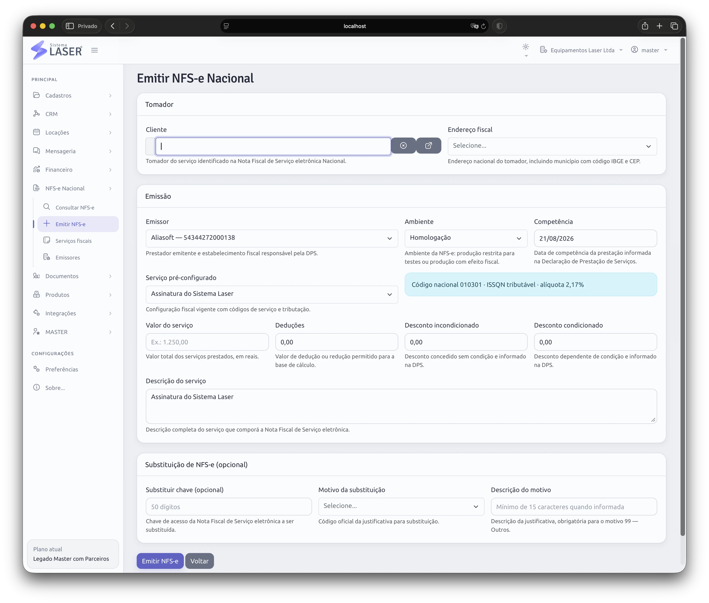

Dados próximos da origem
Use as informações da operação como ponto de partida para o faturamento.
Estamos preparando a emissão de notas fiscais eletrônicas diretamente pela plataforma para tornar o fechamento de cada operação mais conectado, simples e rastreável.
A novidade permitirá emitir notas fiscais eletrônicas diretamente pelo Sistema Laser, aproveitando o contexto da operação e reduzindo a necessidade de repetir dados em ferramentas separadas.
O objetivo é aproximar atendimento, locação, financeiro e documento fiscal. Assim, a equipe poderá avançar do serviço realizado para a emissão com um fluxo mais contínuo e com menos retrabalho.
A funcionalidade está em desenvolvimento e ainda não está disponível para uso. Detalhes de disponibilidade e condições serão comunicados no lançamento.

A emissão fiscal nasce para fazer parte da mesma plataforma que já organiza a rotina da locadora.
Use as informações da operação como ponto de partida para o faturamento.
Reduza deslocamentos entre plataformas no momento de emitir a nota.
Mantenha o documento fiscal próximo do cliente e da operação correspondente.
O Sistema Laser já conecta agenda, locações, clientes, documentos, cobranças e financeiro. A emissão fiscal amplia essa proposta de centralização.
Enquanto o recurso não chega, você já pode conhecer o restante da plataforma e entender como a operação da sua empresa pode ganhar mais controle hoje.
Organize clientes, locações e serviços.
Controle cobranças e financeiro.
Em breve, gere a nota fiscal no sistema.
Agende uma demonstração da plataforma atual e acompanhe a evolução da emissão de Nota Fiscal Eletrônica Nacional.